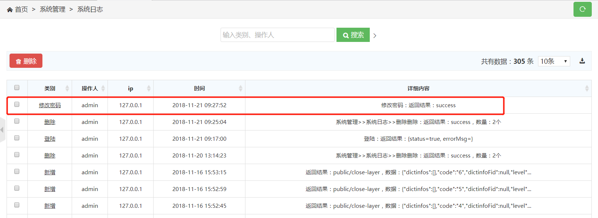

当对某个url声明@MethodLog注解时，在访问该url时，系统会将记录日志保存到数据库。
@RequestMapping({ "/toModifyPwd" })
@MethodLog(type = "修改密码")
public @ResponseBody String toModifyPwd(HttpServletRequest request) {
// 修改密码的具体操作，此处略
}
当用户进行密码修改操作时，会访问/toModifyPwd，系统就会记录该操作日志：
@MethodLog注解参数详细介绍：
| 参数名称 | 参数类型 | 默认值 | 参数说明 |
|---|---|---|---|
| type | String | 空 | 日志的类别，如果为空，将会寻找@AdminPageButton的name作为类别 |
| content | String[] | 空 | 日志内容属性，日志内容默认只记录控制器方法返回的值，如果想记录其他内容，比如删除操作时，删除的数量：
@RequestMapping({"/del"})
@MethodLog(content = {"数量"})
public @ResponseBody String del(String id, HttpServletRequest request) {
// 具体的删除操作，此处略
request.setAttribute("数量", count);
}
该日志记录下来的内容格式为：“删除：返回结果：success，数量：2个”
|